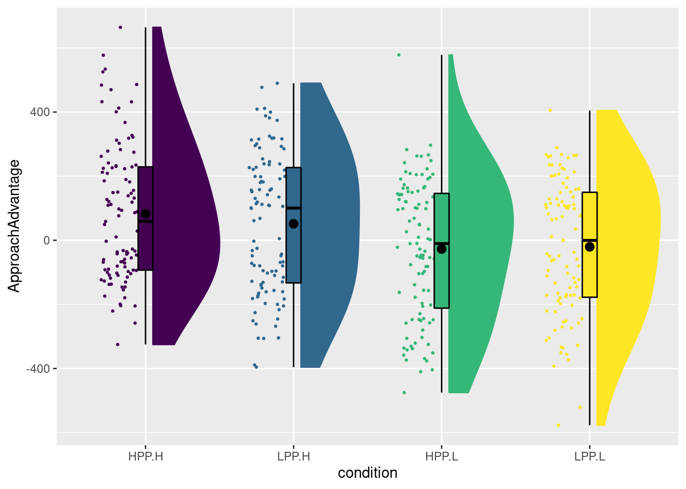
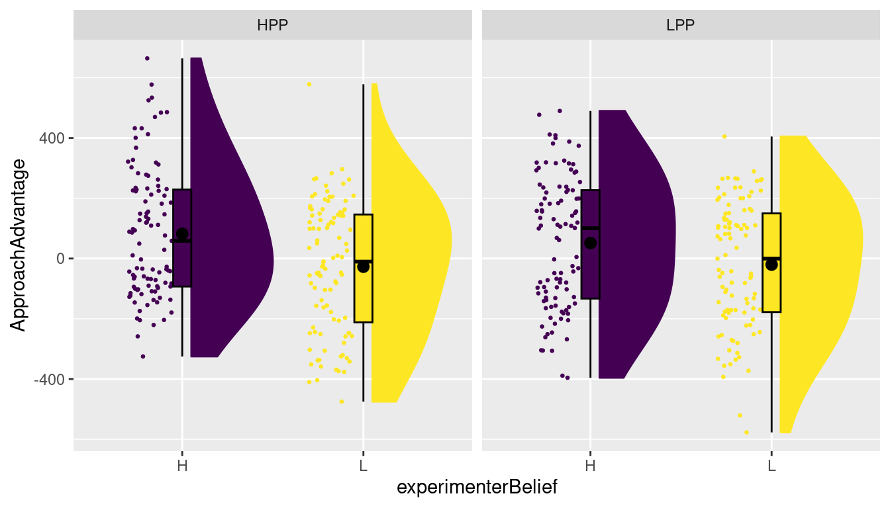
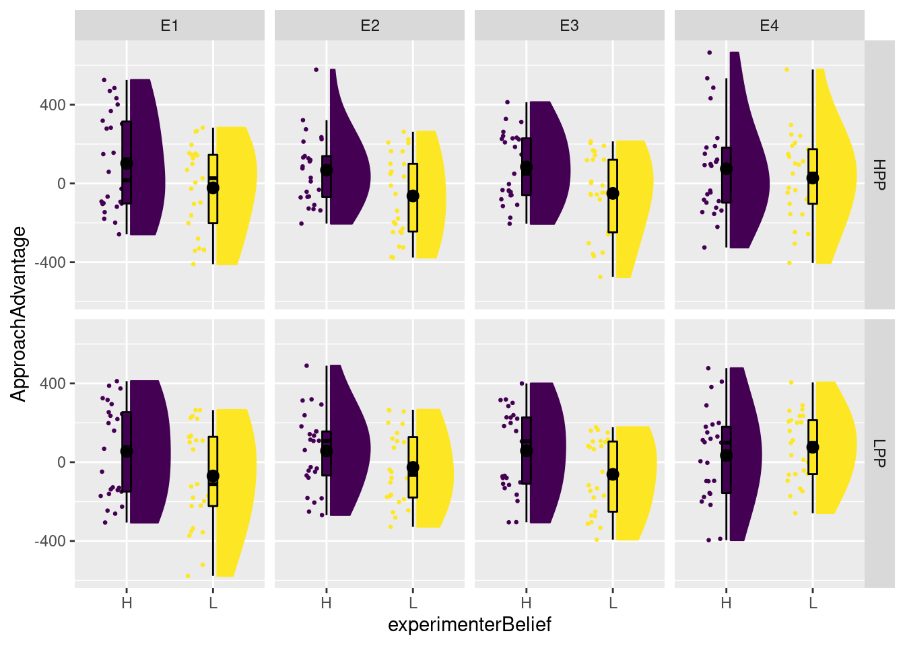
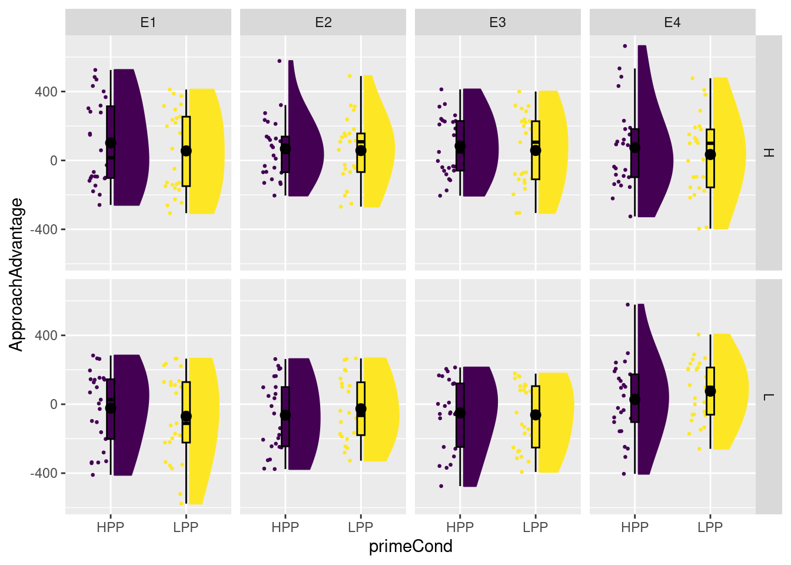

Chapter 7 Factorial ANOVA
In this chapter, we will look at factorial ANOVA, different ways of model comparisons (different SS types), and some ways to perform multiple comparisons and post-hoc tests. We will introduce these with the same data – from a study investigating the role of experimenter belief in social priming – used in Chapter 7 of SDAM. The dataset is available in the sdamr package as expBelief. We can load it from there, and inspect the first six cases, as usual:
library(sdamr)
data("expBelief")
head(expBelief)## pid exptrNum age gender yearInUni ethnicity englishFluency
## 1 1001 1 18 F 1 caucasian 7
## 2 1003 1 18 F 1 CAUCASIAN 7
## 3 1004 1 18 F 1 MiddleEastern 7
## 4 1005 1 19 M 1 asian 5
## 5 1006 1 21 M 1 china 5
## 6 1007 1 19 F 1 caucasion 7
## experimenterBelief primeCond powerPRE powerPOST ApproachAdvantage attractive
## 1 H LPP 56.1 68.8 -149.14290 6
## 2 H LPP 98.2 89.0 -171.48810 1
## 3 H HPP 46.5 70.2 -27.33083 5
## 4 H LPP 58.8 44.8 374.15660 5
## 5 L HPP 64.7 53.6 68.55114 5
## 6 H HPP 61.4 50.3 -92.96860 5
## competent friendly trustworthy
## 1 7 7 7
## 2 3 5 6
## 3 7 7 7
## 4 5 6 5
## 5 6 6 6
## 6 7 7 77.1 Rainclouds for factorial designs
The experiment had a 2 (social prime: low-power bs high power prime) by 2 (experimenter belief: low-power vs high-power manipulation). The two experimental factors are called primeCond and experimenterBelief in the data frame. The dependent variable we looked at is called ApproachAdvantage. We can use the plot_raincloud function from sdamr for plotting the data. The function has an argument groups which allows you to plot separate rainclouds for different levels of a grouping variable. In this case, we need four rainclouds. Because there is no variable to reflect the combinations of the levels of primeCond and experimenterBelief, we should create one first. The interaction() function is a useful function to create a new factor from the combinations of a set of given factors. As I’m going to make changes to the original dataset, I like to first create a new copy of the data fro this, so that I can later still use the original data set.
# create a copy of expBelief and call it "dat"
dat <- expBelief
dat$condition <- interaction(dat$primeCond, dat$experimenterBelief)
# show the levels of the newly created factor:
levels(dat$condition)## [1] "HPP.H" "LPP.H" "HPP.L" "LPP.L"You can see that the condition factor has four levels, which concatenate the levels of primeCond (which are LPP for low-power prime, and HPP for high-power prime) and experimenterBelief (which as L for when the experimenter is made to believe the participant received the low-power prime, and H for when the experimenter believed this was the high-power prime). We can now create a raincloud plot for the four conditions as follows:
plot_raincloud(dat, ApproachAdvantage, groups=condition)
In the book, I first changed the labels of the two variables before calling the interaction function. If you want the same plot as in the book, you could run the following code (which is not evaluated here):
# turn primeCond and experimenterBelief in factors and change the labels
dat$primeCond <- factor(dat$primeCond, labels=c("PH","PL"))
dat$experimenterBelief <- factor(dat$experimenterBelief, labels=c("EH","EL"))
# now create an interaction factor, and change the separation sign to "-" instead of "."
dat$condition <- interaction(dat$primeCond, dat$experimenterBelief, sep="-")
plot_raincloud(dat, ApproachAdvantage, groups=condition)The raincloud plot above effectively treats the design as a oneway design. If we want the plot to more directly reflect the factorial design, we can add some functionality from the ggplot2 package. In particular, we can use so-called facets, which basically allow you to repeatedly draw a similar plot for different levels of an independent variable. Because the plot_raincloud produces a raincloud plot by calling underlying ggplot2 functions, and the result is a ggplot, you can use any function from ggplot2 to make changes to the resulting plot. For instance, we can, within a plot, separate the levels of the experimenterBelief manipulation, and then create two panels (facets) for the levels of the primeCond condition. This is done as follows:
plot_raincloud(dat, ApproachAdvantage, groups = experimenterBelief) + facet_grid(~primeCond)
As usual, it pays to read the documentation for the facet_grid function (try calling ?facet_grid). There is an alternative for facet_grid, called facet_wrap, which provides slightly different labelling to the panels. facet_grid is particularly useful when you have two independent variables in a factorial design for which you would like to create different panels (we will show an example of this later). As we are considering factorial designs here, I chose to use facet_grid, but you can try facet_wrap as well.
7.2 Formulating, estimating, and testing a factorial ANOVA
Formulating a factorial ANOVA model, where we distinguish between main effects and interactions, is not any different from formulating a moderated regression model. We can use the formula interface to indicate that we want to include predictors, as well as the product predictors required to assess interactions. In this case, however, we will enter nominal independent variables into the formula. When these are defined as factors with associated contrast codes, R will automatically expand the model to include the contrast-coded predictors, as well as all relevant product-predictors.
The first thing to do is to make sure that the variables are defined as factors
# check what type the two IVs are
class(dat$primeCond)## [1] "character"class(dat$experimenterBelief)## [1] "character"# turn each into a factor
dat$primeCond <- as.factor(dat$primeCond)
dat$experimenterBelief <- as.factor(dat$experimenterBelief)
# let's check the class for one of them to make sure
class(dat$primeCond)## [1] "factor"# that worked :-)Now let’s define appropriate contrast codes. As usual, it is a good idea to first check the existing contrast, as this shows the order of the factor levels:
contrasts(dat$primeCond)## LPP
## HPP 0
## LPP 1We can see that we need to define a single contrast, with the value for HPP (high-power prime) first and then the value for LPP (low-power prime) second. As the social priming hypothesis would predict the ApproachAdvantage score to be higher for LPP than for HPP, the following contrast makes sense:
contrasts(dat$primeCond) <- c(1/2, -1/2)
contrasts(dat$primeCond)## [,1]
## HPP 0.5
## LPP -0.5We define the contrast for experimenterBelief in the same way:
contrasts(dat$experimenterBelief)## L
## H 0
## L 1# H comes before l
contrasts(dat$experimenterBelief) <- c(1/2, -1/2)
contrasts(dat$experimenterBelief)## [,1]
## H 0.5
## L -0.5Now we are ready to estimate the linear model. To estimate a model with the main effects and interaction, we would use:
modg <- lm(ApproachAdvantage ~ primeCond*experimenterBelief, data=dat)Remember that this notation will expand the formula to
ApproachAdvantage ~ 1 + primeCond + experimenterBelief + primeCond:experimenterBelief
i.e. to a model with an intercept, a main effect of primeCond, a main effect of experimenterBelief, and an interaction primeCond:experimenterBelief. The easiest way to obtain the parameter estimates (and t-tests for those) is to use the summary function on this fitted linear model:
summary(modg)##
## Call:
## lm(formula = ApproachAdvantage ~ primeCond * experimenterBelief,
## data = dat)
##
## Residuals:
## Min 1Q Median 3Q Max
## -556.7 -176.3 10.6 169.8 605.6
##
## Coefficients:
## Estimate Std. Error t value Pr(>|t|)
## (Intercept) 21.46 10.72 2.002 0.046 *
## primeCond1 11.98 21.44 0.559 0.577
## experimenterBelief1 90.51 21.44 4.221 3.02e-05 ***
## primeCond1:experimenterBelief1 37.64 42.88 0.878 0.381
## ---
## Signif. codes: 0 '***' 0.001 '**' 0.01 '*' 0.05 '.' 0.1 ' ' 1
##
## Residual standard error: 214.4 on 396 degrees of freedom
## Multiple R-squared: 0.04565, Adjusted R-squared: 0.03842
## F-statistic: 6.314 on 3 and 396 DF, p-value: 0.0003425Alternatively, we can use the Anova function from the car package to obtain Type 3 (omnibus) tests:
car::Anova(modg, type=3)## Anova Table (Type III tests)
##
## Response: ApproachAdvantage
## Sum Sq Df F value Pr(>F)
## (Intercept) 184285 1 4.0084 0.04596 *
## primeCond 14343 1 0.3120 0.57678
## experimenterBelief 819158 1 17.8175 3.018e-05 ***
## primeCond:experimenterBelief 35410 1 0.7702 0.38069
## Residuals 18206049 396
## ---
## Signif. codes: 0 '***' 0.001 '**' 0.01 '*' 0.05 '.' 0.1 ' ' 1You can see that while the Anova function reports \(F\) statistics, the tests and the corresponding \(p\)-values are identical. In this case, each factor only has two levels, and hence one contrast code. As there is only one parameter associated to each main effect and interaction (the slope of the single contrast-coded predictor for that effect), the omnibus test is a single parameter test. We will see an example where this is not the case shortly.
7.2.1 A threeway ANOVA
We can also try to assess the experimenter effects by including this as an additional factor. Experimenter has four levels, so we’ll need three contrast codes for this variable. In the data.frame, Experimenter is included as exptrNum, which is a numerical variable. So we will first convert it into a factor
class(dat$exptrNum)## [1] "integer"dat$exptrNum <- factor(dat$exptrNum, labels=paste0("E",1:4))I’m using factor here rather than as.factor, because the former allows me to add labels to the levels, through the labels argument. Note that I’m using the paste0 function to create a vector with labels. This function can create combinations of (character) vectors, and is quite handy. The paste0 function is very similar to the paste function, but doesn’t include a space between the combinations:
paste0("E",1:4)## [1] "E1" "E2" "E3" "E4"paste("E",1:4)## [1] "E 1" "E 2" "E 3" "E 4"Right, so let’s define a contrast for exptrNum.
contrasts(dat$exptrNum)## E2 E3 E4
## E1 0 0 0
## E2 1 0 0
## E3 0 1 0
## E4 0 0 1contrasts(dat$exptrNum) <- cbind(c(-1/2,1/2,0,0),
c(-1/3,-1/3,2/3,0),
c(-1/4,-1/4,-1/4,3/4))
contrasts(dat$exptrNum)## [,1] [,2] [,3]
## E1 -0.5 -0.3333333 -0.25
## E2 0.5 -0.3333333 -0.25
## E3 0.0 0.6666667 -0.25
## E4 0.0 0.0000000 0.75Before conducting the analysis, it is always a good idea to look at the data. Let’s create a slightly different raincloud plot than the one in Chapter 8 of SDAMR, now more explicitly reflecting the factorial nature of the design:
plot_raincloud(dat, ApproachAdvantage, groups = experimenterBelief) + facet_grid(primeCond ~ exptrNum)
This plot is not necessarily better than the one in SDAM. It does quite clearly highlight that experimenter belief does not seem to have an effect for Experimenter 4. However, personally, I find it more difficult to assess the effect of prime condition. For that, we could create a second plot to show the effect of primeCond within each panel:
plot_raincloud(dat, ApproachAdvantage, groups = primeCond) + facet_grid(experimenterBelief ~ exptrNum)
This indicates quite clearly that priming condition does not seem to have much of an effect for any experimenter of experimenter belief condition.
Back to the analysis, then. We can estimate a threeway factorial ANOVA by simply adding another independent variable to the formula:
modg_exp <- lm(ApproachAdvantage ~ primeCond*experimenterBelief*exptrNum, data=dat)This formula is expanded to
ApproachAdvantage ~ 1 + primeCond + experimenterBelief + exptrNum + primeCond:experimenterBelief + primeCond:exptrNum + experimenterBelief:exptrNum + primeCond:experimenterBelief:exptrNumIn other words, the model includes all the main effects, all pairwise interactions between the factors, as well as the threeway interaction. We can see the parameter estimates and associated \(t\)-tests as usual through the summary function:
summary(modg_exp)##
## Call:
## lm(formula = ApproachAdvantage ~ primeCond * experimenterBelief *
## exptrNum, data = dat)
##
## Residuals:
## Min 1Q Median 3Q Max
## -507.20 -179.77 11.34 167.78 589.70
##
## Coefficients:
## Estimate Std. Error t value Pr(>|t|)
## (Intercept) 21.401 10.742 1.992 0.0471
## primeCond1 11.908 21.485 0.554 0.5797
## experimenterBelief1 90.441 21.485 4.210 3.19e-05
## exptrNum1 -7.411 30.387 -0.244 0.8075
## exptrNum2 -5.076 26.312 -0.193 0.8471
## exptrNum3 42.309 24.807 1.706 0.0889
## primeCond1:experimenterBelief1 37.381 42.969 0.870 0.3849
## primeCond1:exptrNum1 -60.323 60.774 -0.993 0.3215
## primeCond1:exptrNum2 1.765 52.625 0.034 0.9733
## primeCond1:exptrNum3 -21.445 49.613 -0.432 0.6658
## experimenterBelief1:exptrNum1 -17.453 60.774 -0.287 0.7741
## experimenterBelief1:exptrNum2 11.056 52.625 0.210 0.8337
## experimenterBelief1:exptrNum3 -116.864 49.613 -2.356 0.0190
## primeCond1:experimenterBelief1:exptrNum1 48.352 121.548 0.398 0.6910
## primeCond1:experimenterBelief1:exptrNum2 -8.115 105.249 -0.077 0.9386
## primeCond1:experimenterBelief1:exptrNum3 68.237 99.227 0.688 0.4921
##
## (Intercept) *
## primeCond1
## experimenterBelief1 ***
## exptrNum1
## exptrNum2
## exptrNum3 .
## primeCond1:experimenterBelief1
## primeCond1:exptrNum1
## primeCond1:exptrNum2
## primeCond1:exptrNum3
## experimenterBelief1:exptrNum1
## experimenterBelief1:exptrNum2
## experimenterBelief1:exptrNum3 *
## primeCond1:experimenterBelief1:exptrNum1
## primeCond1:experimenterBelief1:exptrNum2
## primeCond1:experimenterBelief1:exptrNum3
## ---
## Signif. codes: 0 '***' 0.001 '**' 0.01 '*' 0.05 '.' 0.1 ' ' 1
##
## Residual standard error: 214.8 on 384 degrees of freedom
## Multiple R-squared: 0.07105, Adjusted R-squared: 0.03476
## F-statistic: 1.958 on 15 and 384 DF, p-value: 0.01719Wow, there are a lot of estimates and tests here (16 in total)! While these tests are informative, it is common to (at least also) consider omnibus tests. Experimenter has four levels, so three associated contrasts, and we can’t find a test of the “overall” main effect of Experimenter in the output above. For these omnibus tests, we can (as before) use the Anova function from the car package:
car::Anova(modg_exp,type=3)## Anova Table (Type III tests)
##
## Response: ApproachAdvantage
## Sum Sq Df F value Pr(>F)
## (Intercept) 183165 1 3.9689 0.04705 *
## primeCond 14178 1 0.3072 0.57972
## experimenterBelief 817797 1 17.7205 3.19e-05 ***
## exptrNum 138582 3 1.0010 0.39238
## primeCond:experimenterBelief 34927 1 0.7568 0.38487
## primeCond:exptrNum 54288 3 0.3921 0.75875
## experimenterBelief:exptrNum 262131 3 1.8933 0.13018
## primeCond:experimenterBelief:exptrNum 29490 3 0.2130 0.88738
## Residuals 17721491 384
## ---
## Signif. codes: 0 '***' 0.001 '**' 0.01 '*' 0.05 '.' 0.1 ' ' 1If you’d just consider the output from this function, which does not provide a significant Experimenter by Belief interaction, you probably would have missed the potentially interesting experimenterBelief1:exptrNum3 interaction, which was discussed in SDAM.
7.3 Type 1, 2, and 3 Sums of Squares
Whilst intended (I think!) as a factorial experiment with an equal sample size for each priming condition, experimenter belief, and experimenter combination, the sample sizes are actually slightly unbalanced. One way to count the number of cases for each combination of factor levels is through the ftable function (which stands for frequency table). The function has various interfaces, and I find the formula interface easiest to work with. On the left-hand side of the formula, you can provide the name of a factor which you want to place in the columns of the table, and on the right-hand side you can include multiple factors which make up the rows, separated by a “+” sign:
ftable(exptrNum ~ primeCond + experimenterBelief, data=dat)## exptrNum E1 E2 E3 E4
## primeCond experimenterBelief
## HPP H 26 25 25 25
## L 25 25 25 25
## LPP H 25 25 25 25
## L 25 24 25 25As you can see, Experimenter 1 tested 26 participants in the high-power prime and high experimenter belief condition, whilst experimenter 2 tested 24 participants in the low-power prime and low experimenter belief condition.
The result of unbalanced data is that the contrast-coded predictors are no longer orthogonal. As a result, different ways of performing model comparisons will give different results. The differences are likely to be rather subtle here, because the sample sizes are mostly equal. Nevertheless, let’s consider how we can obtain results for the Type 1 and Type 2 SS procedures.
A Type 2 procedure is easily obtained by using the car::Anova function, now with argument type=2:
car::Anova(modg_exp,type=2)## Anova Table (Type II tests)
##
## Response: ApproachAdvantage
## Sum Sq Df F value Pr(>F)
## primeCond 14682 1 0.3181 0.5731
## experimenterBelief 819687 1 17.7615 3.125e-05 ***
## exptrNum 138507 3 1.0004 0.3926
## primeCond:experimenterBelief 34707 1 0.7520 0.3864
## primeCond:exptrNum 53901 3 0.3893 0.7608
## experimenterBelief:exptrNum 261854 3 1.8913 0.1305
## primeCond:experimenterBelief:exptrNum 29490 3 0.2130 0.8874
## Residuals 17721491 384
## ---
## Signif. codes: 0 '***' 0.001 '**' 0.01 '*' 0.05 '.' 0.1 ' ' 1If you compare the results to those of the Type 3 procedure used earlier, you can see some subtle differences. You can see that (apart from the threeway interaction), the SSR terms are slightly different, leading to small differences in the \(F\) statistic and associated \(p\)-value.
Unfortunately, the car::Anova function will not work with type=1. To get the results of a Type 1 procedure, you can use the anova function from the default stats package:
anova(modg_exp)## Analysis of Variance Table
##
## Response: ApproachAdvantage
## Df Sum Sq Mean Sq F value Pr(>F)
## primeCond 1 14565 14565 0.3156 0.5746
## experimenterBelief 1 820883 820883 17.7874 3.084e-05
## exptrNum 3 138657 46219 1.0015 0.3921
## primeCond:experimenterBelief 1 35260 35260 0.7640 0.3826
## primeCond:exptrNum 3 54707 18236 0.3951 0.7566
## experimenterBelief:exptrNum 3 261854 87285 1.8913 0.1305
## primeCond:experimenterBelief:exptrNum 3 29490 9830 0.2130 0.8874
## Residuals 384 17721491 46150
##
## primeCond
## experimenterBelief ***
## exptrNum
## primeCond:experimenterBelief
## primeCond:exptrNum
## experimenterBelief:exptrNum
## primeCond:experimenterBelief:exptrNum
## Residuals
## ---
## Signif. codes: 0 '***' 0.001 '**' 0.01 '*' 0.05 '.' 0.1 ' ' 1again, comparing this to the results of those obtained previously, you can see differences in the SSR terms. It is important to realise that the Type 1 procedure depends on the order of the factors in the formula. For instance, if we change this order as follows:
anova(lm(ApproachAdvantage ~ experimenterBelief*exptrNum*primeCond, data=dat))## Analysis of Variance Table
##
## Response: ApproachAdvantage
## Df Sum Sq Mean Sq F value Pr(>F)
## experimenterBelief 1 820878 820878 17.7873 3.084e-05
## exptrNum 3 138443 46148 1.0000 0.3928
## primeCond 1 14784 14784 0.3204 0.5717
## experimenterBelief:exptrNum 3 263137 87712 1.9006 0.1290
## experimenterBelief:primeCond 1 34782 34782 0.7537 0.3859
## exptrNum:primeCond 3 53901 17967 0.3893 0.7608
## experimenterBelief:exptrNum:primeCond 3 29490 9830 0.2130 0.8874
## Residuals 384 17721491 46150
##
## experimenterBelief ***
## exptrNum
## primeCond
## experimenterBelief:exptrNum
## experimenterBelief:primeCond
## exptrNum:primeCond
## experimenterBelief:exptrNum:primeCond
## Residuals
## ---
## Signif. codes: 0 '***' 0.001 '**' 0.01 '*' 0.05 '.' 0.1 ' ' 1you get slightly different results. I should also mention the aov function from the stats package, which will also provide Type 1 ANOVA tests. I have wrestled with this function often when I started using R a long time ago. I’ve happily not used it for some time now, so will only mention its existence here.
While the differences are very subtle here, this should not lead you to believe that the methods generally provide the same results. When the design is more unbalanced, the results can change quite dramatically.
Finally, I want to point out again that all three procedures test the SSR terms against the same SSE term (the SS given under Residuals). This is the SSE of the full model (the model with all effects) and this is exactly the same for all three procedures. The procedures differ in how they compute the SSR terms for the different effects, as you can see.
7.4 Planned comparisons and post-hoc tests with emmeans
The emmeans package (Lenth 2022) is very useful when you want to do more comparisons than can be implemented in the contrast codes within a single model, whether these are planned comparisons or post-hoc tests. The name of the package stands for estimated marginal means. One part of the functionality of the package is to compute the (unweighted) marginal means according to different types of models, including linear models. In the SDAM book, we discussed how these marginal means can be computed using contrast codes. For example, when using orthogonal contrasts, the intercept represents the grand mean, which is a simple average of averages, where the sample means of all groups are added and then divided by the number of groups. If the groups have unequal sample sizes, this is not taken into account in computing the grand mean. That is what is meant by unweighted marginal means.
You can think of the marginal means as the estimated population means assuming all groups have an equal sample size. The emmeans function (from the emmeans package with the same name) provides a simple way to compute the estimated marginal means for each condition, but also for the levels of one factor (averaging over the levels of other factors). The emmeans requires at least two arguments: an object, which is an estimated model, and specs, which is either a character vector with the names for the predictors for which the estimated marginal predictors should be computed, or a formula. Here, we will use the formula interface, as it is flexible and intuitive. Going back to our simpler 2 by 2 design (ignoring Experimenter), the estimated marginal means of the four conditions can be computed with emmeans as follows:
# load the package. If you don't have it installed, you will need to run
# install.packages("emmeans") first!
library(emmeans)
# call emmeans with modg as the object
emmeans(modg, specs = ~ primeCond:experimenterBelief)## primeCond experimenterBelief emmean SE df lower.CL upper.CL
## HPP H 82.1 21.3 396 40.17 124.1
## LPP H 51.3 21.4 396 9.17 93.5
## HPP L -27.2 21.4 396 -69.36 14.9
## LPP L -20.4 21.5 396 -62.74 22.0
##
## Confidence level used: 0.95You can see that the emmeans function computes an estimated marginal mean for each combination of primeCond and experimenterBelief. For each mean, we get an estimate, a standard error of that estimate, the degrees of freedom (\(n - \text{npar}(G)\)), and a confidence interval. The marginal means for each group in the design are just the sample means in the groups in this case, but things become more complicated when we add additional metric predictors to the design, as we will see when we discuss ANCOVA in another chapter. You can also obtain estimated marginal means for the levels of one factor, averaging over the levels of the others. These are the marginal means that are compared in the main effects of that factor. For instance, for the primeCond factor, the marginal means are
emmeans(modg, specs = ~ primeCond)## NOTE: Results may be misleading due to involvement in interactions## primeCond emmean SE df lower.CL upper.CL
## HPP 27.5 15.1 396 -2.28 57.2
## LPP 15.5 15.2 396 -14.41 45.4
##
## Results are averaged over the levels of: experimenterBelief
## Confidence level used: 0.95and for experimenterBelief they are:
emmeans(modg, specs = ~ experimenterBelief)## NOTE: Results may be misleading due to involvement in interactions## experimenterBelief emmean SE df lower.CL upper.CL
## H 66.7 15.1 396 37.0 96.45
## L -23.8 15.2 396 -53.7 6.09
##
## Results are averaged over the levels of: primeCond
## Confidence level used: 0.95In addition to computing marginal means and providing confidence intervals for each, the package has a reasonably straightforward interface for testing differences between estimated marginal means. Such differences are effectively the contrasts that we have specified with contrast codes, and tested with Type 3 tests. A benefit of using emmeans is that you can test more of these contrasts than the required number of contrast codes (i.e. 3 in this example).
If you want all pairwise comparisons between the means, you can get these by entering pairwise as the left-hand side of the formula:
emmeans(modg, specs = pairwise ~ primeCond:experimenterBelief)## $emmeans
## primeCond experimenterBelief emmean SE df lower.CL upper.CL
## HPP H 82.1 21.3 396 40.17 124.1
## LPP H 51.3 21.4 396 9.17 93.5
## HPP L -27.2 21.4 396 -69.36 14.9
## LPP L -20.4 21.5 396 -62.74 22.0
##
## Confidence level used: 0.95
##
## $contrasts
## contrast estimate SE df t.ratio p.value
## HPP H - LPP H 30.79 30.2 396 1.018 0.7390
## HPP H - HPP L 109.33 30.2 396 3.614 0.0019
## HPP H - LPP L 102.49 30.3 396 3.380 0.0044
## LPP H - HPP L 78.53 30.3 396 2.590 0.0487
## LPP H - LPP L 71.69 30.4 396 2.358 0.0870
## HPP L - LPP L -6.84 30.4 396 -0.225 0.9960
##
## P value adjustment: tukey method for comparing a family of 4 estimateswhich automatically uses the Tukey HSD procedure to adjust the significance level of each test to obtain a family-wise significance level of \(\alpha_\text{FW} = .05\). You can obtain other corrections through the adjust argument. Some options to enter there, which were discussed in SDAM, are:
tukeyscheffebonferroniholm
There are other possibilities (see ?summary.emmGrid for details). For instance, we can apply the Scheffé adjustment with:
emmeans(modg, specs = pairwise ~ primeCond:experimenterBelief, adjust="scheffe")## $emmeans
## primeCond experimenterBelief emmean SE df lower.CL upper.CL
## HPP H 82.1 21.3 396 40.17 124.1
## LPP H 51.3 21.4 396 9.17 93.5
## HPP L -27.2 21.4 396 -69.36 14.9
## LPP L -20.4 21.5 396 -62.74 22.0
##
## Confidence level used: 0.95
##
## $contrasts
## contrast estimate SE df t.ratio p.value
## HPP H - LPP H 30.79 30.2 396 1.018 0.7924
## HPP H - HPP L 109.33 30.2 396 3.614 0.0049
## HPP H - LPP L 102.49 30.3 396 3.380 0.0103
## LPP H - HPP L 78.53 30.3 396 2.590 0.0836
## LPP H - LPP L 71.69 30.4 396 2.358 0.1369
## HPP L - LPP L -6.84 30.4 396 -0.225 0.9970
##
## P value adjustment: scheffe method with rank 37.4.1 Adjusted p-values
One thing I should mention is that rather than showing you the corrected significance level \(\alpha\) for each test, emmeans provides you with an adjusted p-value. A benefit of this is that you can just compare each \(p-value\) to the usual criterion level and call each test significant when \(p<.05\). However, I personally don’t find the resulting \(p\) value easy to interpret as a probability. Remember that the conventional \(p\)-value is the probability of obtaining a test result as large or more extreme, assuming that the null hypothesis is true. This is itself already a tricky concept, but with some experience with statistical distributions and the conceptual foundations of null-hypothesis significance testing, it is a valid probability that is interpretable as such. Wright (1992) defines the adjusted p-value as the smallest family-wise significance level at which the tested null-hypothesis would be rejected. This isn’t really a probability any more, as far as I can see it. It is true that the conventional \(p\)-value is, by definition, also equal to the smallest significance level at which the null-hypothesis would be rejected. For instance, if a particular test provides a \(p\)-value of \(p = .07\), then you would reject the null-hypothesis by setting \(\alpha \geq .07\). Hence, \(\alpha = .07\) is the smallest value of \(\alpha\) which would provide a significant test result. Similarly, if the test provided a \(p\)-value of \(p=.004\), then \(\alpha = .004\) is the smallest significance level for which the test would provide a significant result.
Although the \(p\)-value is equivalent to this “minimum \(\alpha\)” value, it is also a valid probability, and when you move to the domain of corrections for multiple comparisons, defining the \(p\)-value as the minimum family-wise significance level \(\alpha_\text{FW}\) for which the individual test would provide a significant test result, the correspondence with a proper probability is lost.
For the Bonferroni correction, the adjusted \(p\)-value is easy to compute. Remember that the Bonferroni correction for a total of \(q\) tests is to set the significance level of each individual test to \(\alpha = \frac{\alpha}{q}\). We can adjust the \(p\)-values correspondingly as \(p_\text{adj} = q \times p\). But if you’d perform \(q=100\) tests, and \(p=.2\), then \(p_\text{adj} = 100 \times .2 = 20\), which is obviously not a valid probability! Adjusted \(p\)-values are in this sense just convenience values which can be compared to e.g. \(\alpha_\text{FW} = .05\), but nothing more.
7.5 Testing general contrasts with emmeans
When you have computed the required estimated marginal means, you can then use these to define a set of general contrasts that you want to test. This set can include more contrasts than \(g-1\), but each contrast is defined in a way that we are used to. Let’s consider an example.
ems <- emmeans(modg, specs = ~ primeCond:experimenterBelief)
ems## primeCond experimenterBelief emmean SE df lower.CL upper.CL
## HPP H 82.1 21.3 396 40.17 124.1
## LPP H 51.3 21.4 396 9.17 93.5
## HPP L -27.2 21.4 396 -69.36 14.9
## LPP L -20.4 21.5 396 -62.74 22.0
##
## Confidence level used: 0.95We have four estimated marginal means, and the order that these are presented in is seen above: HPP,H, LPP,H, HPP,L, and LPP,L. We can now use the contrast function from emmeans (note that there is no “s” at the end, so this is a different function than contrasts!) to supply the ems object and a list of (named) contrasts. Suppose we want to test the following set of (somewhat arbitrary) contrasts:
| \(c_1\) | \(c_2\) | \(c_3\) | \(c_4\) | \(c_5\) | \(c_6\) | \(c_7\) | \(c_8\) | |
|---|---|---|---|---|---|---|---|---|
| HPP,H | \(\tfrac{1}{2}\) | \(\tfrac{1}{2}\) | \(\tfrac{1}{2}\) | \(0\) | \(\tfrac{1}{2}\) | \(0\) | \(\tfrac{2}{3}\) | \(0\) |
| LPP,H | \(-\tfrac{1}{2}\) | \(\tfrac{1}{2}\) | \(0\) | \(\tfrac{1}{2}\) | \(-\tfrac{1}{2}\) | \(0\) | \(-\tfrac{1}{3}\) | \(-\tfrac{1}{3}\) |
| HPP,L | \(\tfrac{1}{2}\) | \(-\tfrac{1}{2}\) | \(-\tfrac{1}{2}\) | \(0\) | \(0\) | \(\tfrac{1}{2}\) | \(0\) | \(\tfrac{2}{3}\) |
| LPP,L | \(-\tfrac{1}{2}\) | \(-\tfrac{1}{2}\) | \(0\) | \(-\tfrac{1}{2}\) | \(0\) | \(-\tfrac{1}{2}\) | \(-\tfrac{1}{3}\) | \(-\tfrac{1}{3}\) |
These can be interpreted as
- \(c_1\): main effect of Prime
- \(c_2\): main effect of Belief
- \(c_3\): comparing high and low belief for low-power prime
- \(c_4\): comparing high and low belief for high-power prime
- \(c_5\): comparing high-power and low-power prime for high belief
- \(c_6\): comparing high-power and low-power prime for low belief
- \(c_7\): comparing high-power prime with high belief to low-power prime conditions
- \(c_8\): comparing high-power prime with low belief to low-power prime conditions
Using the contrast function, all these comparisons can be tested simultaneously, using the Scheffé adjustment, as follows:
contrast(ems,
method = list(c1 = c(1/2, -1/2, 1/2, -1/2),
c2 = c(1/2, 1/2, -1/2, -1/2),
c3 = c(1/2, 0, -1/2, 0),
c4 = c(0, 1/2, 0, -1/2),
c5 = c(1/2, -1/2, 0, 0),
c6 = c(0, 0, 1/2, -1/2),
c7 = c(2/3, -1/3, 0, -1/3),
c8 = c(0, -1/3, 2/3, -1/3)),
adjust="scheffe")## contrast estimate SE df t.ratio p.value
## c1 11.98 21.4 396 0.559 0.9577
## c2 90.51 21.4 396 4.221 0.0006
## c3 54.66 15.1 396 3.614 0.0049
## c4 35.85 15.2 396 2.358 0.1369
## c5 15.40 15.1 396 1.018 0.7924
## c6 -3.42 15.2 396 -0.225 0.9970
## c7 44.43 17.5 396 2.544 0.0926
## c8 -28.46 17.5 396 -1.624 0.4518
##
## P value adjustment: scheffe method with rank 3If this were a set of planned comparison, and you were confident enough to not apply a correction for multiple comparison, you could leave out the adjust argument, or provide the value adjust="none".